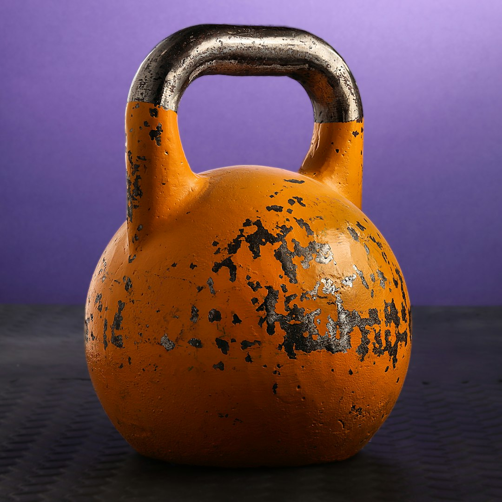

Entry · Tuesday, May 19, 2026

Plate N. The kettlebell, competition, in serene repose; its thicccness, undeniable.
Kettlebell, Competition
/ket-ul-bel, com-pe-TISH-un/ n.- 1. A spherical weight of iron or steel, characterized by a single-looped handle, used in competitive sports for its standardized mass and satisfyingly stout profile.
- 2. colloq. A thiccc unit of fitness ambition, often seen resting majestically upon gym floors, daring any challenger to lift its unapologetically dense form.
In a sentence,
"He hoisted a thiccc kettlebell, competition-grade, and the gym acoustics shifted in deference."
Etymology,
From Russian 'girya', referring to the traditional weight, with 'kettle' and 'bell' added by English speakers to describe its form. Its thicccness, however, transcends language.